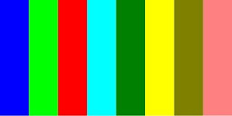

LimpetGE Titorial Part 3 - Refining the look of the game
The LimpetGE first tutorial. Creation of a simple first-person game.
Part 3 - Refining the look
Part 2 - Refining the look of the game
In part two of this tutorial we ended with a playable game, this tutorial oes into
improving, or at least changing, the look of it.
Sphere Rolling
The game already rolls the spheres, but at the moment we cannot see that as they are all of a solid color. First we will change that by using a texture.
To do that, we need a texture for the sphere. I will use this one:

When applied to a sphere, this will "wrap" itself round he sphere, shrinking the top and bottom so that it fits. The sphere
will end up looking like a beach ball:
To do this, the "sphereStructure(....)" function could be something like:
function sphereStructure()
{
// Have sphers multi colored, so create three structures
var colors = [
[1.0, 0.5, 0.5, 1.0], // red
[0.5, 1.0, 0.5, 1.0], // green
[0.5, 0.5, 1.0, 1.0], // blue
[1.0, 1.0, 0.0, 1.0], // yellow
];
var structs = [];
/*
* The spheres, as they are, are 2 meters in radius, or 4 meters in diameter
*/
for(var i = 0; i < 4; i++) {
var stru = new LStructureDef(ShaderSimple, {color: colors[i], collision: LDYNAMIC, distance: 2.0});
stru.addSphere({radius: 2.0});
var stru = new LStructureDef(ShaderSimple, {texture: "squish/bsphere.jpg", collision: LDYNAMIC, distance: 2.0});
stru.addSphere({
position: lFromXYZPYR(0, 0, 0, 0, 0, Math.PI * i / 4), // Rotate a little z axis to make spheres more "random"
radius: 2.0,
});
structs.push(stru);
}
return structs;
}
Rather than create four sphere structures of spheres with solid colors, this creates four with the texture showed above, rotated clockwise by varying amounts.
In creating the "LStructureDef" instance, rather than define a "color" in the "args" arguments, I define a "texture", the value being the URL of the texture collage to use,
which in the sphere's case, which only has one surface, is the entire image.
The "lFromXYZPYR(...)" function is a helper function, it generates a tranformation matrix ("mat4") that has gone through the transformations:
X - Translate along the X axis
Y - Translate along the Y axis
Z - Translate along the Z axis
P - Pitch - rotate around the X axis
Y - Yaw - rotate around the Y axis
R - Roll - rotate around the Z axis
Note: it performs this as though the object is translated, then relative to itself, it rolls, pitches then yaws (which is not the order the arguments are supplied).
The rest of the code is the same, except I changed the sphere creation argument name from "color" to "angle" in the "Sphere" class function:
function Sphere(angle)
function Sphere(angle)
{
this.obj = new LWObject(g_structures.Sphere[angle], this);
this.obj = new LWObject(g_structures.Sphere[angle], this);
this.obj.mkvisible(false);
lScene.lPlace(this.obj, mat4.create());
this.velocity = 0; // To be created in "makesphere"
// For celebrating
this.endx = g_prngd.next(20) - 10;
this.endy = g_prngd.next(20) - 10;
this.endz = g_prngd.next(20) - 10;
}
This makes the spheres roll...
The full script to date can be viewed here. Now you can see the spheres roll towards you.
Here is a link to an HTML page where you can play it!.
Refactoring The Spheres
Although the spheres look better now (IMHO), there is more that can be done, and which I want to show you. The first is to give the sphere a better entrance, the other is
to improve the "look" of it.
To give it a better entrance, we will have the sphere "drop" into the corridor, rather than just appear.
The other is to give the sphere a (fake) shadow.
LimpetGE at this time does not support "proper" shadows, however, it is relatively easy to draw a partially transparent black disk under each sphere, though to do so you will need:
- Another shader added to the game
- Re-factoring the sphere structure and objects
Adding another shader
This is very much like adding the first shader. You need to:
- Edit the "shader_squish.js" file you created before.
- Just below where you inserted the "shaders/simple.js" file (which is just before the "lShader_objects" definition), copy in the contents of the "shaders/solid.js" file.
In the "lShaders_objects" array, add the "ShaderSolid" reference:
const lShader_objects = [
ShaderSimple,
ShaderSolid,
];
and that is it.
New "sphereStructure()" function
The "sphereStructure()" needs to be changed from what you have just done to:
function sphereStructure()
{
var structs = [];
/*
* The spheres, as they are, are 2 meters in radius, or 4 meters in diameter
*/
for(var i = 0; i < 4; i++) {
var stru = new LStructureDef(ShaderSimple, {texture: "squish/bsphere.jpg", collision: LDYNAMIC, distance: 2.0});
stru.addSphere({
position: lFromXYZPYR(0, 0, 0, 0, 0, Math.PI * i / 4), // Rotate a little z axis to make spheres more "random"
radius: 2.0,
});
structs.push(stru);
}
return structs;
var mainstruct = new LGroupDef({collision: LDYNAMIC, distance: 2.0});
var anglestruct = new LGroupDef();
var ballstruct = new LStructureDef(ShaderSimple, {texture: "squish/bsphere.jpg"});
ballstruct.addSphere({radius: 2.0});
var shadowstruct = new LStructureDef(ShaderSolid, {color: [0.0, 0.0, 0.0, 0.7]});
shadowstruct.addCylinder({position: lFromXYZPYR(0, -2.0, 0, LR90, 0, 0), radius: 2.0, depth: 0.002, hold: [LI_FRONT, LI_SIDE]})
return [mainstruct, anglestruct, ballstruct, shadowstruct];
}
Refatoring indeed. The single LStructureDef has been replaced with four separate definitions, which will be used to create a game object hierarchy for each sphere.
The "LGroupDef" class is a structure with no components, however all other features are the same.
The one of these paced in "mainstruct" will be used to create the top level object. The main one that is moved and be involved in collision detection.
The "LGroupDef" instance placed in "anglestruct" will be used to create a sort of "gimball", so the shpere can be rotated in any direction prior to
rolling it towards the player.
The "LstructureDef" instance that is assigned to "ballstruct" is the sphere itself.
The "LStructureDef" instance assigned to "shadowstuct" is the dark circle that will be placed under the sphere. The "ShaderSolid" shader is used. As it is in
the "lShader_objects" array at the end it can be used for (partially) transparent objects. Also, the shader itself is not effected by the properties
"lScene.directionalLightColor" (sunlight) or the "lScene.ambientLight" (light in the shadow), it simply displays the color or texture as is.
The "structure.addCylinder(....)" method adds a cylinder, that has a radius around the Z axis, and a depth plus and minus from the origin. So it creates one
as though you are looking "end on". So the above creates a cylinder with a 2 meter radius, 2 millimeters thick. The "position" argument moves the object down 2 meters (so
it is on the floor) then rotates it so it is like a "plate" rather than a "wheel". The "hold" argument tells LimpetGE just to render the top of these objects.
The hierarchy of the Sphere game objects will be:
- mainstruct - The main game object used for movement and collision detection
- anglestruct - A type of virtual "gimball" to rotate sphere any which way prior to it rolling towards the player
- ballstruct - The sphere itself
- shadowstruct - The structure for the "shadow" underneath the sphere
The Sphere constructor
The "Sphere" class constructor is modified to:
function Sphere(angle)
function Sphere()
{
this.obj = new LWObject(g_structures.Sphere[angle], this);
this.obj = new LWObject(g_structures.Sphere[0], this);
this.angle = new LObject(g_structures.Sphere[1], this);
this.ball = new LObject(g_structures.Sphere[2], this);
this.shadow = new LObject(g_structures.Sphere[3], this);
lScene.lPlace(this.obj, mat4.create());
this.obj.addChild(this.angle, mat4.create());
this.angle.addChild(this.ball, lFromXYZPYR(0, 0, 0, g_prngd.next(Math.PI), g_prngd.next(Math.PI), g_prngd.next(Math.PI)));
this.obj.addChild(this.shadow, mat4.create());
this.obj.mkvisible(false);
this.velocity = 0; // To be created in "makesphere"
// For celebrating
this.endx = g_prngd.next(20) - 10;
this.endy = g_prngd.next(20) - 10;
this.endz = g_prngd.next(20) - 10;
}
First, the difference between the "LWObject" and the "LObject" classes. The "LWObject" can only be added to the "Scene" at the top level of
the game object hierarchy using "lScene.lPlace(...)". A "LObject" game object can be added onto any other object further "down" the hierarchy
using the "addChild(...)" method. "LObject" game objects can also be added to "lScene", but "LWObject" game objects cannot be added onto
other game objects. The reason for this is that LimpetGE can perform far more efficient code for the same functionality
if it knows the object is top level.
In the above, a new game object is created for each of the sphere's structures, and then assembled into it's tree or hierarchy. A game
object is added onto the "leaf" of another game object by using the "addChild(...)" method of the parnt. This takes two arguments:
- The game object to add
- The position relative to the parent's center to add it as a "mat4" transformation matrix.
This method is used to assemble the objects into the hierarchy described above. The sphere itself is added onto it's parent (the virtual "gimball") at a random
angle (along all three axis).
Changes to the sphere positioning
In order to make it look as though the sphere "drops" in, we will "start" it 10 meters above eye level and have it fall prior to rolling towards the player.
Changes to the "sphere.start()" method to make this happen are:
start: function()
{
this.velocity = 5.0 + g_prngd.next(5.0); // Set velocity between 5 and 10
/*
* Move to - X = laterally somewhere random in the corridor, not touching the walls
* Y = 10 above
* Z = Start of run
*/
var x = 19 - g_prngd.next(38); // Get a number between -19 and 19
if(x > 18) x = 18; // Cannot be grater than 18
if(x < -18) x = -18; // or less than -18
this.obj.moveHere(x, 0, -110);
this.obj.moveHere(x, 10, -110);
// Make sure it is not hitting anything, If it is move back 2.1
// Wash rinse repeat...
var collision = false;
function _see(cob)
{
collision = true;
}
for(;;) {
this.obj.warp(); // Warp here - no ray tracing
collision = false;
lScene.lCAllDynamicPointDetect(this.obj, 2.0, _see);
if(collision) {
this.obj.moveAbs(0, 0, -2.1);
this.obj.moveFlat(0, 2.1, 0);
} else {
break;
}
}
// Move the object up by 10
// It will fall at velocity of 20, and min velocity forward is 5
// Therefore half second to fall, move forward 2.5 as well
// Has already warped here in for loop, if have not need to do this
// otherwise ray tracing occurs from where it last was!.
this.obj.mkvisible(true);
this.obj.procpos();
},
The difference here is that:
- "this.obj.moveHere(x, 10, -110)" - This places the sphere 10 meters up
- "this.obj.moveAbs(0, 2.1, 0)" - In the event it materialises a sphere in the same place as another, it moves the sphere 2.1
meters up than than 2.1 meters back.
The "obj.moveAbs(...)" method has been changed to "obj.moveFlat(...)" method. This is not strictly necessary in this case. the "obj.moveAbs(...)" moves the object
relative to the Scene's origin, whereas "obj.moveFlat(...)" moves the object relative to the "flat" direction it is pointing, that is he amount it has
been rotated around the "Y" axis. This would be useful if the game ever grows into a version where the spheres to not all travel in the same direction.
The sphere movement
The method now looks like:
move: function(delta)
{
if(!this.obj.isvisible) return;
/*
* Adjust the velocity to that of the sphere
*/
delta *= this.velocity;
// Move possibly 2 ways
var y = 0;
if(this.obj.y > 0) {
var y = delta * 3;
if(this.obj.y > y) {
delta = 0;
} else {
delta -= y / 3;
y = this.obj.y;
}
}
/*
* Moving, spheres roll, so cannot use the "move" or "moveFlat" methods
* as they move in the direction the object is pointing, which can be
* anywhere as it rolls.
* A quick and dirty way to "fix" this is to use the "moveAbs" method
* which moves relative to the scene (or the origin). As we are only
* moving one way (down Z axis, positive) we can get away with that here.
* A more "correct" solution, that llows proper rolling, is in the next tutorial.
*/
this.obj.moveAbs(0, 0, delta);
this.obj.moveAbs(0, -y, delta);
/*
* Since we mentioned it, lets roll this.
* You cannot see that if a single color, but put a texture on the sphere...
*
* divide by 2 * Pi * radius so it rolls the speed it is travelling
*/
this.obj.rotate(delta / 2, 0, 0);
this.angle.rotate(delta / 2, 0, 0);
/*
* In LimpetGE it is really the object that has moved responsibility
* to see if it has hit anything...
* Here, spheres can either hit the camera or another sphere
*/
var hitsphere = null;
function _see(cob) {
if(cob.control instanceof LCamera) {
lScene.ishit = true; // Hit camera - Game over
} else if (cob.control instanceof Sphere) {
hitsphere = cob.control;
}
}
lScene.lCAllPointDetect(this.obj, 2.0, _see);
if(hitsphere) {
// First move back
this.obj.moveAbs(0, 0, -delta);
this.obj.moveAbs(0, y, -delta);
this.angle.rotate(-delta / 2, 0, 0);
// Then swap velocity
if(this.velocity > hitsphere.velocity) {
var temp = this.velocity;
this.velocity = hitsphere.velocity;
hitsphere.velocity = temp;
}
}
// If we are off the edge, die
this.obj.procpos();
if(this.obj.z > 220) this.die();
},
To cater for the vertical drop at the start, the above method looks at the height the object is located - which
is in "this.obj.y". If it is above zero the object will instead fall at three times it's horizontally velocity which
is stored in the "y" variable above. There is code there that if "delta" is larger than necessary to complete the
sphere's drop it will use the remaining amount to travel towards the player.
The "move-backs" also need to take into the vertical movements.
The "moveFlat(...) and "moveHere(...)" methods are applied onto the top level game object, and all object
descendants of that are moved by the same amount. It is though all objects are placed in a box, and the box
is moved.
As for the rotation, the "virtual gimball" containing the sphere is "rolled" as the sphere moves towards the player. This,
with the manner the sphere objects were created and assembled, gives the impression of the spheres being
dropped randomly and rolling towards you, with a shadow underneath it.
A couple of associated changed
To fully implement the above, a couple of changes are required.
The first, the "Sphere" objects are not created with an argument any more, so in the "g_playlevel()" function:
// Create sphere objects
for(var i = 0; i < 200; i++)
lScene.spheres.push(new Sphere(angle));
lScene.spheres.push(new Sphere());
The second is that now the spheres are "dropping in" rather than "appearing", it looks bad if they go through the ceiling itself. So, the ceiling has been
shortened in the "corridorStructure()" function:
// Ceiling is three meters above eye level
// Taking this out of collision detection (corners: null) as all happens when Y is 0 anyway.
struct.addBlock({position: lFromXYZ(0, 3.1, 0), size: [20, 0.1, 120], texturecontrols: lIndArray([[LI_BOTTOM, cyan]]), corners: null});
struct.addBlock({position: lFromXYZ(0, 3.1, 12), size: [20, 0.1, 114], texturecontrols: lIndArray([[LI_BOTTOM, cyan]]), corners: null});
The above effect shortens the ceiling from being 240 meters long to 228 meters long (12 meters shorter), and moves it back 12 meters, meaning it ends 12 meters before the
floor does. This leaves a gap at the end for the spheres to fall into.
The full script to date can be viewed here. Now you can see the spheres roll towards you.
Here is a link to an HTML page where you can play it!.
Tarting up the corridor
A final aspect of the tutorial, some aspects of making the corridor a bit more interesting.
All the changes to this are mostly in the "corridorStructure()" function, and some in the "Corridor" class constructor, and one or two scattered in the "Scene" class.
The "corridorStructure()" has been changed to the following. So many additions have been done I have not used the usual highlighting, and I woill not go through
it line by line, but highlighted what I consider the more interesting bits.
function corridorStructure()
{
// Walls form a corridor, with the ends left out.
var colors = [
[3.0, 0.2, 0.1, 1.0], // red-brown
[0.8, 1.0, 1.0, 1.0], // cyan
[0.0, 0.3, 0.0, 1.0], // darkish green
[1.0, 1.0, 1.0, 1.0], // White for lines
[0.5, 0.1, 0.1, 1.0], // Dark brown
[0.15, 0.03, 0.03, 1.0], // Shadow brown // Dark brown * 0.3 (Ambient light)
[0.1, 0.1, 0.0, 1.0], // Dark tree
[0.4, 0.5, 0.5, 1.0], // Dark cyan
]
var brown = lTextureColor(8, 0);
var cyan = lTextureColor(8, 1);
var green = lTextureColor(8, 2);
var white = lTextureColor(8, 3);
var darkbrown = lTextureColor(8, 4);
var shadowbrown = lTextureColor(8, 5);
var darkgreen = lTextureColor(8, 6);
var shadowcyan = lTextureColor(8, 7);
// Unit is a meter
// Person is 2 meters high (to eye level)
// Floor is 2 meter below, Ceiling 3 meter above
// Floor is 40 meters wide
// Corridor is 400 meters long
var struct = new LStructureDef(ShaderSimple, {colors: colors, collision: LSTATIC});
// Also will require to draw things in shadow.
// Will use "ShaderSolid" here. Although this is really for transparent shadows, can be used
// here too as nothing transparent is displayed in front of it
var shadow = new LStructureDef(ShaderSolid, {colors: colors});
// Walls
// The center needs to be positioned +- 20 meters either side, 0.5 meters above "eye level" (y = 0.0)
// "size" is from center for addBlock, so it is actually double.
// Make allowances for thickness of walls.
//
// Have this as a window
struct.addBlock({position: lFromXYZ(-20.1, -0.75, 0), size: [.1, 1.25, 120], texturecontrols: lIndArray([[LI_RIGHT, brown]])});
struct.addBlock({position: lFromXYZ(-20.1, 2.75, 0), size: [.1, 0.25, 120], texturecontrols: lIndArray([[LI_RIGHT, brown], [LI_BOTTOM, brown]]), corners: null});
struct.addBlock({position: lFromXYZ(20.1, -0.75, 0), size: [.1, 1.25, 120], texturecontrols: lIndArray([[LI_LEFT, brown]])});
struct.addBlock({position: lFromXYZ(20.1, 2.75, 0), size: [.1, 0.25, 120], texturecontrols: lIndArray([[LI_LEFT, brown], [LI_BOTTOM, brown]]), corners: null});
// Floor needs to be 2 meters below eye level
// Taking this out of collision detection (corners: null) as all happens when Y is 0 anyway.
struct.addBlock({position: lFromXYZ(0, -2.1, 0), size: [20, 0.1, 120], texturecontrols: lIndArray([[LI_TOP, green]]), corners: null});
// Ceiling is three meters above eye level
// Taking this out of collision detection (corners: null) as all happens when Y is 0 anyway.
struct.addBlock({position: lFromXYZ(0, 3.1, 12), size: [20, 0.1, 114], texturecontrols: lIndArray([[LI_BOTTOM, cyan]]), corners: null});
// And a bit beyond where the balls come in
struct.addBlock({position: lFromXYZ(0, 3.1, -116), size: [20, 0.1, 4], texturecontrols: lIndArray([[LI_BOTTOM, cyan]]), corners: null});
// Put an end in, up to 2.5M high
struct.addBlock({
position: lFromXYZ(0, -0.75, -120), // Center 120 meters in frnyt of origin, .75 meters below "eye level"
size: [20, 1.25, .1], // Across the back, 2,5M high, 20 CM thick
texturecontrols: lIndArray([[LI_FRONT, brown]]), // Color it brown
corners: null // No collision detection
});
// Half meter "band" at top
struct.addBlock({
position: lFromXYZ(0, 2.75, -120), // Center 120 meters in frnyt of origin, 2.75 meters above "eye level"
size: [20, 0.25, .1], // Across the back, .5 M high 20 CMM thick
texturecontrols: lIndArray([[LI_FRONT, brown], [LI_BOTTOM, brown]]), // Color it brown
corners: null // No collision detection
});
// 0.5 Meter window separators every 10 M (starting at ends)
for(var i = -20; i <= 20; i += 10) {
// Filler between 2.5 to 4.5 meters high
struct.addBlock({
position: lFromXYZ(i, 0.5, -120), // Post position, 120 meters in front of origin, 3.5 meters above "eye level"
size: [0.25, 2.5, .15], // Where the post needs to be, the back, 2 M high 20 CM thick
texturecontrols: lIndArray([[LI_FRONT, darkbrown], [LI_LEFT, darkbrown], [LI_RIGHT, darkbrown]]), // Color it brown
corners: null // No collision detection
});
}
for(var i = -120; i <= 120; i += 10) {
if(i != -100) // Not for finish line
struct.addBlock({position: lFromXYZ(0, -2.0, i), size: [20, 0.001, 0.1], texturecontrols: lIndArray([[LI_TOP, white]]), corners: null});
struct.addBlock({
position: lFromXYZ(-20.1, 0.5, i), // Post position, 120 meters in front of origin, 3.5 meters above "eye level"
size: [0.15, 2.5, .15], // Where the post needs to be, the back, 2 M high 20 CM thick
texturecontrols: lIndArray([[LI_FRONT, darkbrown], [LI_RIGHT, darkbrown]]), // Color it brown
corners: null // No collision detection
});
// Right hand side posts more complex. The bits "behind" the wall are in shadow, so ue the shadow structure
// for that
// First - the bit in the light
struct.addBlock({
position: lFromXYZ(20.1, 1.5, i), // Post position, 120 meters in front of origin, 3.5 meters above "eye level"
size: [0.15, 1, .15], // Where the post needs to be, the back, 2 M high 20 CM thick
texturecontrols: lIndArray([[LI_FRONT, darkbrown], [LI_LEFT, darkbrown]]), // Color it brown
corners: null // No collision detection
});
// Now for the bits at top and bottom in the shade
shadow.addBlock({
position: lFromXYZ(20.1, 2.75, i), // Post position, 120 meters in front of origin, 3.5 meters above "eye level"
size: [0.15, .25, 0.15], // Where the post needs to be, the back, 2 M high 20 CM thick
texturecontrols: lIndArray([[LI_FRONT, shadowbrown], [LI_LEFT, shadowbrown]]), // Color it brown
corners: null // No collision detection
});
shadow.addBlock({
position: lFromXYZ(20.1, -0.75, i), // Post position, 120 meters in front of origin, 3.5 meters above "eye level"
size: [0.15, 1.25, 0.15], // Where the post needs to be, the back, 2 M high 20 CM thick
texturecontrols: lIndArray([[LI_FRONT, shadowbrown], [LI_LEFT, shadowbrown]]), // Color it brown
corners: null // No collision detection
});
//}
}
struct.addBlock({position: lFromXYZ(0, -2.0, -101), size: [20, 0.001, 1], texturecontrols: lIndArray([[LI_TOP, white]]), corners: null});
// Let us add a whole lot of cylinders outside
for(var i = 0; i < 100; i++) {
var x = g_prngd.next(10) - 35;
var z = g_prngd.next(250) - 150;
struct.addCylinder({position: lFromXYZPYR(x, 10, z, LR90, 0, 0), radius: g_prngd.next(.5) + 1, depth: 10, texturecontrols: lIndArray([[LI_SIDE, darkgreen]])});
struct.addCylinder({position: lFromXYZPYR(-x, 10, z, LR90, 0, 0), radius: g_prngd.next(.5) + 1, depth: 10, texturecontrols: lIndArray([[LI_SIDE, darkgreen]])});
}
// Backgroubnd cylinders at the end
for(var i = 0; i < 20; i++) {
var x = g_prngd.next(40) - 20;
var z = g_prngd.next(10) - 140;
struct.addCylinder({position: lFromXYZPYR(x, 50, z, LR90, 0, 0), radius: g_prngd.next(.5) + 1, depth: 50, texturecontrols: lIndArray([[LI_SIDE, darkgreen]])});
}
// Put something on the ceiling. A few slightly lighter squares to pretend they are kinda skylights Use the "solid" (shadow structure) for this.
for(var z = -95; z <= 95; z += 10) {
for(x = -15; x <= 15; x += 10) {
shadow.addBlock({position: lFromXYZ(x, 3.1, z), size: [1, .2, 1], texturecontrols: lIndArray([[LI_BOTTOM, shadowcyan]])});
}
}
return [struct, shadow];
}
The first thing to notice is that I have used more colors in this.
The next is the first highlighted line. I have created another "lStructureDef" instance for the corridor, this time using the "ShaderSolid" shader. This is because
the "directionalLightColor" is coming from it's default direction, that is from a vector of (1, 1, 1) - (or "square root of 3 of those to be more exact). That is,
in this game, from behind the player's right shoulder.
.
As this "tarting up" involves drawing small posts that protrude into the corridor. Some of these will be in the shade. As their is no "proper" shadows in
LimpetGE, if the "ShaderSimple" is used here it will seem as though these are in the "sunlight". Here a cheat is used to sort of fix that, those objects
that are rendered in the shade are rendered using the "ShaderSolid" shader, which is unaffected by "sunlight", using the appropriate dark color.
A similar problem occurs using the "fake skylights" in the ceiling. Here the "ShaderSolid" shader is used for the opposite reason. Any "skylight"
square placed their using "ShaderSimple" woul simply be too dark.
I will not go through all the structure above. It creates windows at the side (or at least missing rectangles from the walls), something to see out of them,
and so on.
At the end of the "corridorStructure()" function I need to return both "LStuctureDef" instances now, and the "Corridor" class constructor needs to create
an object based on each of them now.
function Corridor()
{
this.obj = new LWObject(g_structures.Corridor, this);
this.obj = new LWObject(g_structures.Corridor[0], this);
this.solids = new LWObject(g_structures.Corridor[1], this);
lScene.lPlace(this.obj, mat4.create());
lScene.lPlace(this.solids, mat4.create());
}
The other change to this is in the "scene.die()" method of the scene class. The way the dying animation is done is it turns the "directionalLightColor" (sunlight) red,
and dimms it and the "ambientColor" (color in the shade). However, the "ShaderSolid" is unaffected by these, and slightly spoils the effect. To make it less
noticeable I simply make the "ShaderSolid" structure's object invisible at the start of the animation.
I also need to change the "g_playlevel()" function to store a reference of the corridor object so the program can easily access it.
In the "g_playlevel()" function:
// Create the wall and ceiling. Need to access it in "die" now
new Corridor();
lScene.corridor = new Corridor();
In the "Scene" class, the "scene.die()" methid is:
die: function()
{
// First, "solid" shader objects ignore light, so for the correct effect,
// make the wall structure shadoes invisible
this.corridor.solids.mkvisible(false);
this.lMessage("Squished!");
this.directionalLightColor = vec3.fromValues(1.0, 0.0, 0.0);
this.isend = true;
},
The full script to date can be viewed here. Now you can see the spheres roll towards you.
Here is a link to an HTML page where you can play it!.
Conclusion
More refinement and fun can be had with this. A reference to the functionality if LimpetGE is in the Reference Manual. Enjoy.